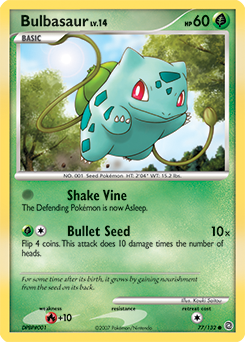

Organization should be based on your own preferences such as whether you want to be able to pull out certain Pokémon types for battles or want to keep them in numerical order so you can know what's missing in the set you're collecting. There are several ways to categorize Pokémon cards including:
You can combine different organizational methods by layering them. For example, you can have a group of all water type Pokémon and then as a subgroup, they are arranged by rarity, going from most rare to the most common card type.
It's helpful to keep a master list somewhere easy to find, like the front pocket of a binder, so that you can reference it and locate a card within a group or subgroup quickly.
As you accumulate cards, you want to make sure that you stay organized so that you know where to find a card when you need it. Label makers are a great way to mark your binders and tins with the groups and subgroups you have chosen. Also, have a separate space for duplicates or similar cards so that your main collection doesn't become cluttered.